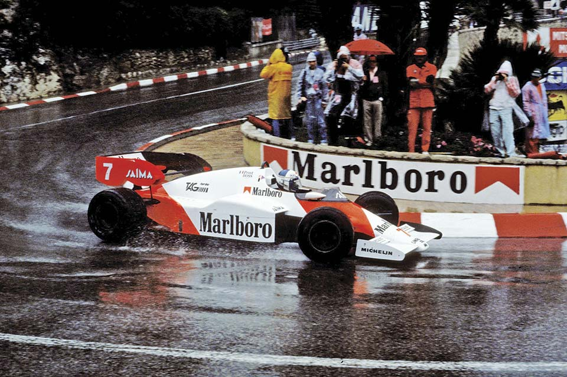
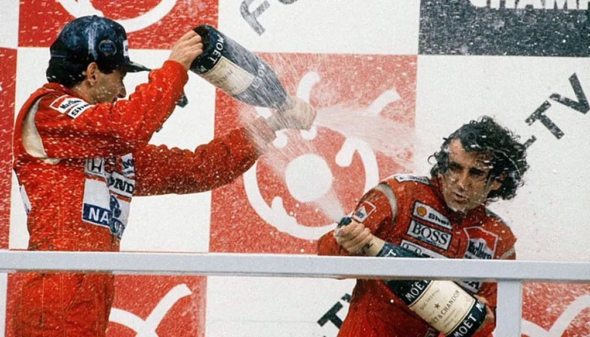
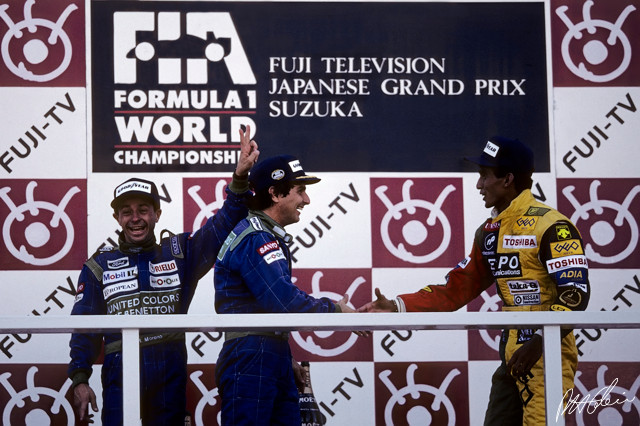
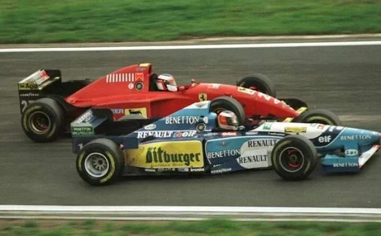
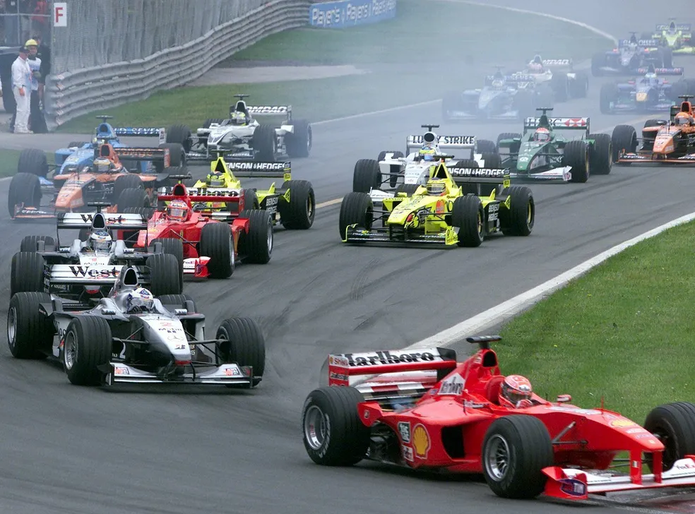

Corridas Icônicas da F1 (1980-2000)
As 5 melhores corridas que marcaram essa época dourada da Fórmula 1.

GP Mônaco 1984
Uma das corridas mais dramáticas da história da Fórmula 1, marcada pelo duelo intenso entre Ayrton Senna e Alain Prost.

GP Japão 1988
Corrida decisiva, protagonizada por Senna e Prost, que definiu o campeonato.

GP Japão 1990
Famosa rivalidade Senna x Prost, com polêmica na largada.

GP Europa 1995
Corrida com momentos inesquecíveis e batalha intensa entre pilotos.

GP Brasil 2000
Vitória emocionante de Schumacher, aplaudida pela torcida brasileira.